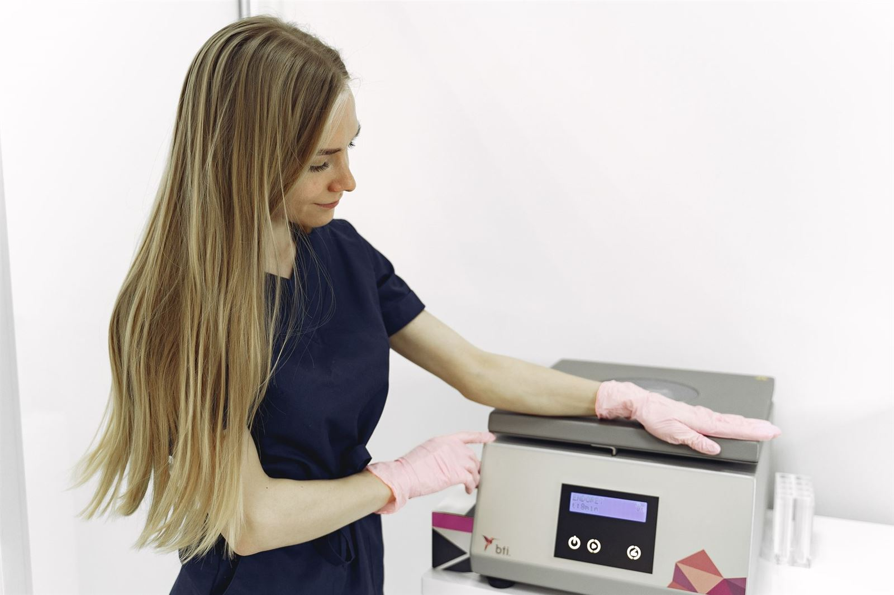
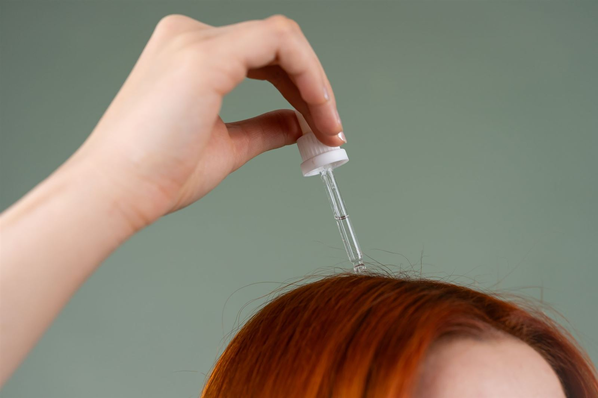

Estimulación
Mesoterapia capilar
Microinyecciones de activos estimulantes directamente en el cuero cabelludo, para despertar folículos debilitados y frenar la caída.
Tricología · Miraflores, Lima
No todas las alopecias se tratan igual. Por eso empezamos por un diagnóstico tricológico con tecnología Hair Metrix AI y te acompañamos, mes a mes, hasta que tu cabello vuelve.

Fotografía de ambientación clínica
El momento de decidirte
Nadie te devuelve el cabello de golpe. Te lo devolvemos mes a mes, con un plan diseñado para tu tipo de alopecia. Baja y recórrelo: la hebra crece contigo.
Mes 0 · Consulta inicial
Analizamos tu cuero cabelludo con tecnología de diagnóstico tricológico. Aquí descubrimos qué alopecia es la tuya y por qué está pasando — presencial en Miraflores o virtual desde donde estés.
Mes 1 · Plan personalizado
Con el diagnóstico en mano, diseñamos tu plan: medicamentos orales, tópicos o intradérmicos según tu caso. Porque no todas las alopecias se tratan igual — esa es la bandera del centro.
Mes 2 · Estímulo
Microinyecciones estimulantes directo en el cuero cabelludo, donde el folículo las necesita. Las primeras hebras nuevas suelen ser finas — es la señal de que el proceso arrancó.
Mes 3 · Regeneración
Tu propia sangre, centrifugada y devuelta al folículo como concentrado regenerador. Junto a las infiltraciones de medicamentos, es el empujón que engrosa lo que ya empezó a crecer.
Mes 4–5 · Seguimiento
Volvemos a medir con tricoscopia y comparamos contra tu punto de partida. Si algo hay que ajustar, se ajusta. El acompañamiento constante es lo que separa un tratamiento serio de una promesa.
Mes 6 · Resultado
Más densidad, más grosor, menos caída. No es magia: es diagnóstico diferenciado, ciencia aplicada mes a mes y un equipo que no te suelta.
Ciencia, no promesas
Todos se realizan en el centro, con indicación médica y sin necesidad de trasplante en la mayoría de los casos.
Microinyecciones de activos estimulantes directamente en el cuero cabelludo, para despertar folículos debilitados y frenar la caída.
Tu propia sangre, procesada para concentrar factores de crecimiento que regeneran el folículo. Natural, seguro y con respaldo clínico.
Medicación aplicada exactamente donde el cuero cabelludo la necesita, indicada según tu diagnóstico tricológico.

Orales, tópicos e intradérmicos que sostienen el tratamiento entre sesiones. El plan exacto sale de tu evaluación, no de una receta genérica.
También tratamos casos específicos: alopecia femenina, SOP, postparto y menopausia.
Prueba, no palabras
*Cifras publicadas por Recupera — Centro Nacional de Tricología. Los resultados varían según cada diagnóstico.
Había probado varios productos sin obtener resultados. Desde que inicié mi tratamiento noté cómo mi cabello comenzó a recuperar densidad.
Comencé mi tratamiento hace más de 4 meses y estoy muy satisfecho. Los resultados han superado mis expectativas.
Desde que comencé el tratamiento mi autoestima ha dado un gran salto. Me siento mucho más seguro.
¡Increíble! Mi cabello está más grueso y fuerte que en años gracias a los productos de Recupera.
He estado usando productos de Recupera durante varios meses y he visto una mejora significativa. La calidad y efectividad realmente se notan.
Me siento extremadamente cómodo y seguro. Estoy muy satisfecho con el apoyo del equipo de Recupera.
¡Fantástico! Mi cabello nunca había estado tan fuerte y grueso, y mi autoestima ha subido como nunca.
Testimonios publicados por pacientes en recuperatucabelloperu.com
Proceso a la vista
Casos, tecnología y consejos capilares en nuestras redes.
Antes de escribirnos
No todos los casos de caída del cabello tienen la misma causa. Por eso realizamos una evaluación especializada para identificar el origen del problema antes de indicar cualquier tratamiento.
La pérdida de densidad, el adelgazamiento progresivo del cabello o la aparición de zonas con menos cabello pueden ser señales de alopecia.
Contamos con evaluaciones presenciales en nuestra sede de Miraflores y también evaluaciones virtuales, estés donde estés.
Sí. Muchos casos de caída del cabello y alopecia pueden tratarse sin necesidad de un trasplante capilar.
Sí. Atendemos tanto hombres como mujeres. De hecho, contamos con tratamientos para casos relacionados con estrés, cambios hormonales, postparto y menopausia.
Escríbenos por WhatsApp al 915 005 585 para coordinar tu evaluación, o usa el asistente capilar de esta página.
Tu mes 0 empieza aquí
Demo con respuestas predefinidas — en el proyecto final responde con IA conversacional.